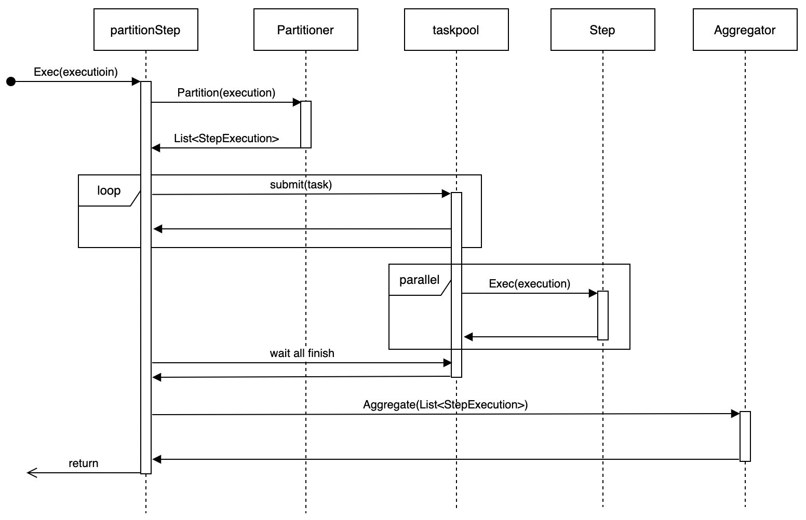

Step Introduction
Step Types
GoBatch supports three types of steps:
SimpleStep
- Executes a task in a single thread
- Suitable for simple processing logic
- Implements business logic through Handler or Task interface
ChunkStep
- Processes data in chunks
- Implements "read-process-write" pattern
- Supports transaction management
- Main components:
- ItemReader: Data reading
- ItemProcessor: Data processing
- ItemWriter: Data writing
PartitionStep
- Supports parallel processing
- Splits large tasks into subtasks
- Can aggregate subtask results
- Main components:
- Partitioner: Task partitioning
- Aggregator: Result aggregation

Writing Simple Step
Simple step executes business logic in a single thread. Suitable for simple processing scenarios that don't require data partitioning.
Implementation:
// Method 1: Implement Handler interface
type Handler interface {
Handle(execution *StepExecution) BatchError
}
// Method 2: Write function with supported signatures
func(execution *StepExecution) BatchError
func(execution *StepExecution)
func() error
func()
// Build step
step := gobatch.NewStep("step1").Handler(myHandler).Build()
// or
step := gobatch.NewStep("step1", myHandler).Build()
Writing Chunk Step
Chunk step processes data in chunks using read-process-write pattern. Suitable for large-scale data processing.
Core components:
- Reader: Read data
- Processor: Process data (optional)
- Writer: Write data
Implementation:
// Reader interface
type Reader interface {
Read(chunkCtx *ChunkContext) (interface{}, BatchError)
}
// Processor interface
type Processor interface {
Process(item interface{}, chunkCtx *ChunkContext) (interface{}, BatchError)
}
// Writer interface
type Writer interface {
Write(items []interface{}, chunkCtx *ChunkContext) BatchError
}
// Build step
step := gobatch.NewStep("chunk_step").
Reader(&myReader{}).
Processor(&myProcessor{}).
Writer(&myWriter{}).
ChunkSize(10).
Build()
Writing Partition Step
Partition step splits task into multiple subtasks for parallel execution and aggregates results. Suitable for large-scale data processing that can be parallelized.
Core components:
- Partitioner: Task partitioning
- Aggregator: Result aggregation (optional)
Implementation:
// Partitioner interface
type Partitioner interface {
Partition(execution *StepExecution, partitions uint) ([]*StepExecution, BatchError)
GetPartitionNames(execution *StepExecution, partitions uint) []string
}
// Aggregator interface
type Aggregator interface {
Aggregate(execution *StepExecution, subExecutions []*StepExecution) BatchError
}
// Build step
step := gobatch.NewStep("partition_step").
Handler(handler).
Partitioner(partitioner).
Aggregator(aggregator).
Partitions(10).
Build()
Lifecycle Listeners
Various phases of step execution can be intercepted using listeners:
// Step listener
type StepListener interface {
BeforeStep(execution *StepExecution) BatchError
AfterStep(execution *StepExecution) BatchError
}
// Chunk listener
type ChunkListener interface {
BeforeChunk(context *ChunkContext) BatchError
AfterChunk(context *ChunkContext) BatchError
OnError(context *ChunkContext, err BatchError)
}
// Partition listener
type PartitionListener interface {
BeforePartition(execution *StepExecution) BatchError
AfterPartition(execution *StepExecution, subExecutions []*StepExecution) BatchError
OnError(execution *StepExecution, err BatchError)
}
File Processing
GoBatch provides built-in file processing components that support:
- Multiple file formats (CSV, TSV, etc.)
- File encoding settings
- Automatic field mapping
- File validation
Example:
// Define file model
var fileModel = file.FileObjectModel{
FileStore: &file.LocalFileSystem{},
FileName: "data/{date}/file.csv",
Type: file.CSV,
Encoding: "utf-8",
Header: true,
ItemPrototype: &MyData{},
}
// Read file
step := gobatch.NewStep("file_read").
ReadFile(fileModel).
Writer(&myWriter{}).
Build()
// Write file
step := gobatch.NewStep("file_write").
Reader(&myReader{}).
WriteFile(fileModel).
Build()
Execution Flow
Simple Step Execution
Simple step executes Handler's business logic directly in the current Job thread. Suitable for simple business logic scenarios.

Chunk Step Execution
Executes the following flow in a single thread:
- Start transaction
- Read specified size of data chunk
- Process data
- Write results
- Commit or rollback transaction
- Repeat above steps until processing completes

Partition Step Execution
- Use Partitioner to partition data
- Generate substeps for each partition
- Execute substeps in parallel
- Wait for all substeps to complete
- Use Aggregator to aggregate results

For information on how to write Steps, please refer to Example 1 and Example 2.